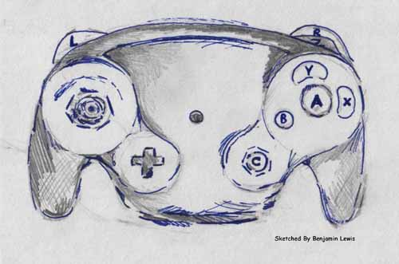
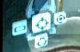
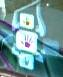

What ever you thought when you first saw Metroid Prime, I hope it wasn't that "Oh!, It's just another First Person Shooter" - because you are wrong.
Metroid Prime uses the latest technology, provided by the Nintendo GameCube to deliver the best game play possible. The unique, original control system sets it apart from all other games making it a thoroughly enjoyable masterpiece.
The controller has been created so efficiently, that it fits your hand perfectly, and no button is ever out of reach. This has been incorporated in Metroid Prime in a way that makes it different to a First Person Shooter. Usually, two analog sticks are used to control how the character moves and where they look, but at times of fast game play, two sticks were hard to maneuver, which is why you control Samus with one stick in Metroid.
The controls are set out like this:
| Left Shoulder Button: Squeeze to lock onto enemies, use the grapple effect, strafe, scans objects when in scan mode |
|
Right Shoulder Button: Hold to look around and target your enemies, when in morph ball state, use to activate the spider-ball mode | |
| Analog stick: Move Samus and look around, manual aim whilst pressing the right shoulder button |
 Sketched by Benjamin Lewis |
Z-Button - press to bring up detailed, 3D map | |
| Y-Button - Fires missiles and drops bombs in Morph Ball mode | |||
| D-Pad

Switch between the Combat, Scan, Thermal and X-Ray Visors
|
X-Button - flips between Morph-ball and normal modes | ||
| C-Stick  Switches between Power, Wave, Ice and Plasma beams |
B-Button - While locked onto an enemy, pressing the B button and a direction will dodge an attack, boost ball in Morph-ball state, jump and double jump |
A-Button - Fire Beam weapons and in Morph-ball state, it lays bombs | |
The fact that Metroid Prime does not use two sticks (like other FPS on consoles) gives the game the feel unlike that of a FPS. The game is played through a First-Person perspective and is based around high levels of gun-fire, which are the only elements to link it to a FPS. Other features of the game include high levels of exploration of environments, jumping over platforms, accurately firing at targets instead of aimlessly shooting (i.e. the grappling hook), and in-depth puzzle solving.
Take my word for it, Metroid Prime is a FPS and a Platformer, with a few RPG features thrown in to help it along. You will be amazed at how well it works, and how enjoyable the gameplay is. Metroid Prime sets the standard for a new genre of gaming!